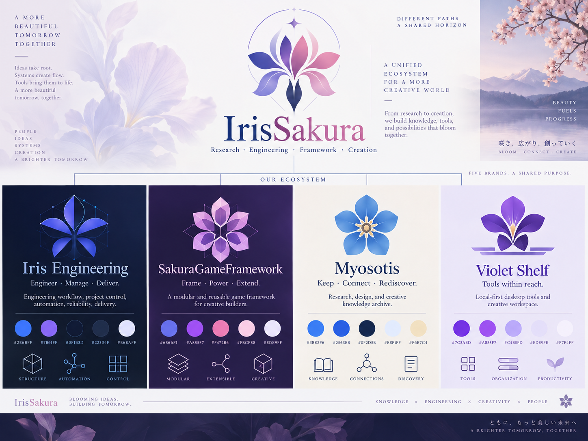
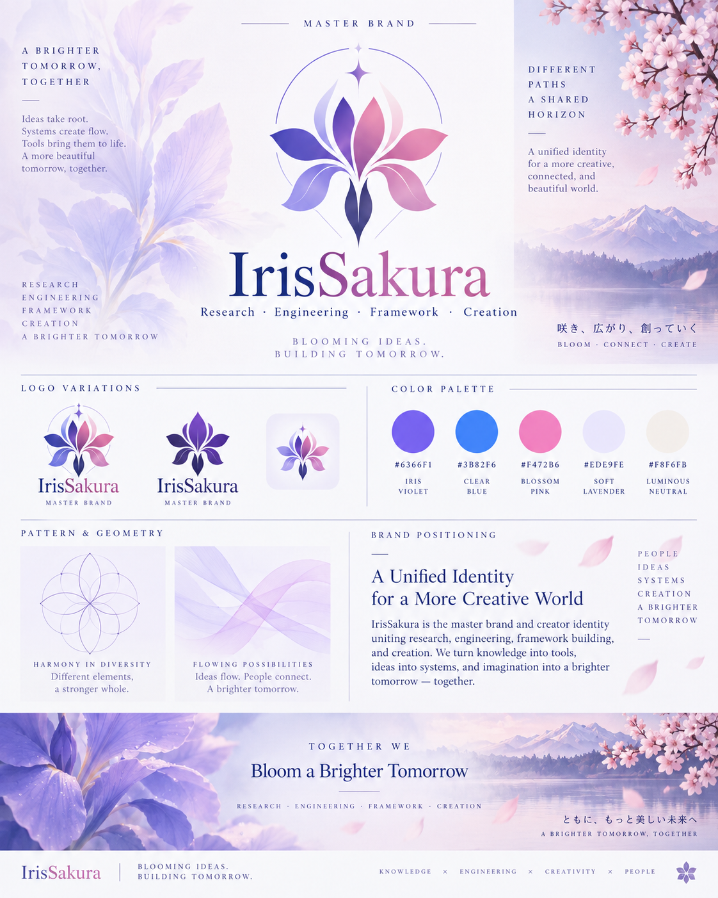
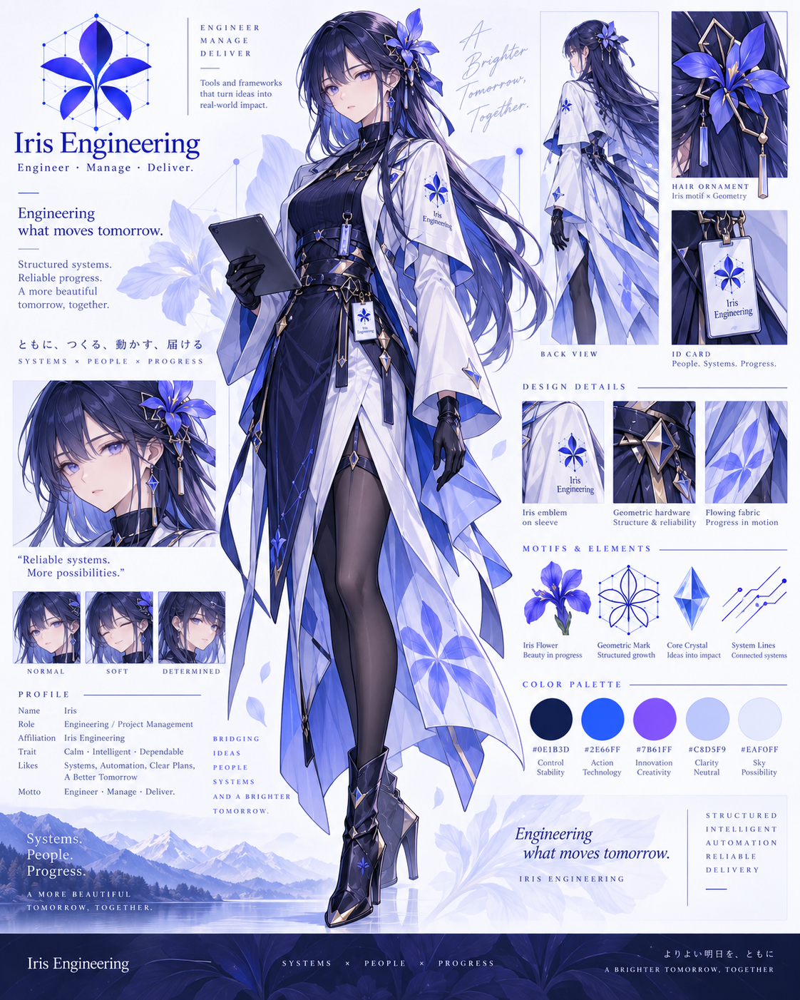
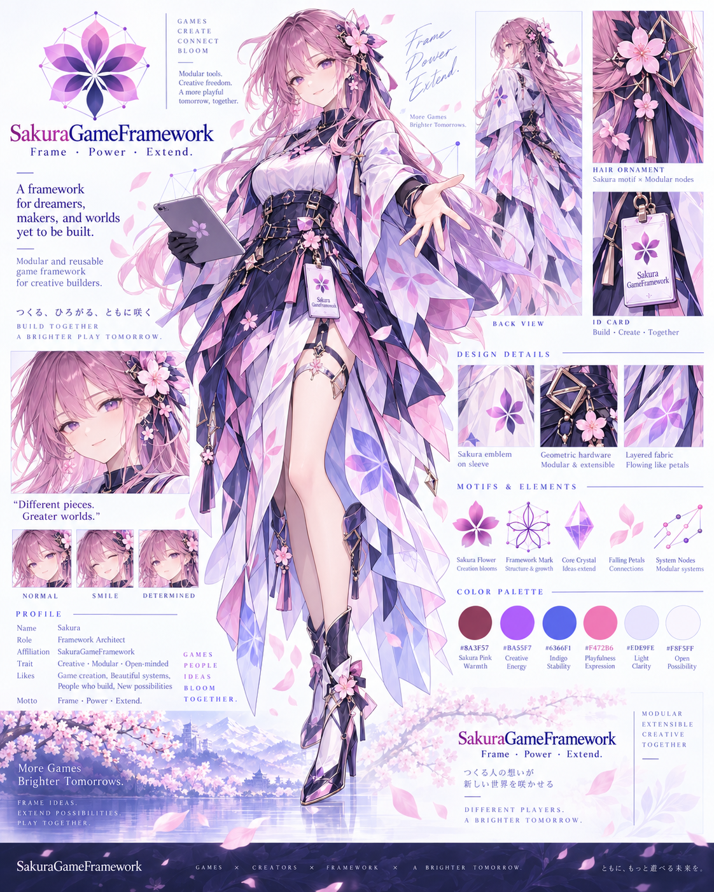
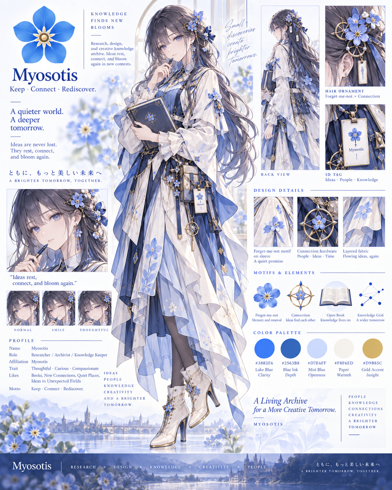
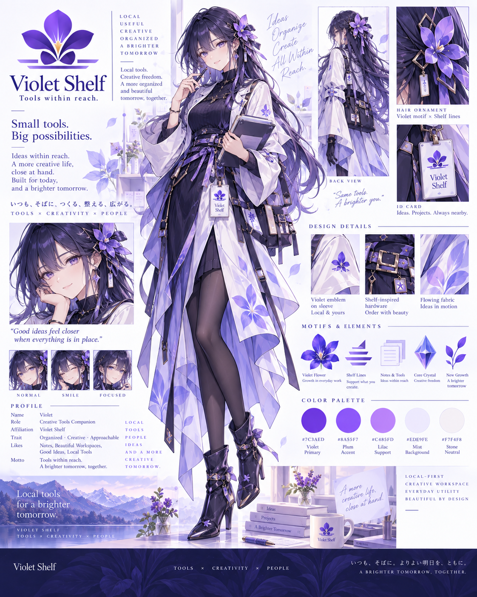

Engineering & Project Management
冷静、精确、结构化。承担 Engineering、Project Management、Workflow、Pipeline 与 Reliability。
- Project Management
- Workflow & Pipeline
- Quality & Reliability
IRISSAKURA · CREATOR IDENTITY
IrisSakura 是共同创作者身份；Iris Engineering、SakuraGameFramework、Myosotis 与 Violet Shelf 是彼此独立、通过真实协作相连的四个项目品牌。
CREATOR IDENTITY · FOUR PROJECT BRANDS

CREATOR IDENTITY · FOUR INDEPENDENT PROJECT BRANDS
不把项目混成统一平台：工程、框架、资料库与本地工具各自清晰，并以实际作品和资料形成协作。

MASTER BRAND BOARD
这张历史 V3 完整品牌总板保留当时构图；其嵌入的平台、数量与命名文案不构成当前产品事实。当前 B01 与 B02 参考板另列如下。



DIRECT COOPERATION
IRIS 对工程与项目管理负责，SAKURA 对游戏框架负责。IRIS × SAKURA 仅表达这两者的直接合作，不代表四个项目的统一平台。
冷静、精确、结构化。承担 Engineering、Project Management、Workflow、Pipeline 与 Reliability。
温暖、灵动、富有生命力。承担 Game Framework、Runtime Systems、Gameplay Modules 与 Tooling。
FOUR PROJECT BRANDS
Iris Engineering、SakuraGameFramework、Myosotis 与 Violet Shelf 并列协作；它们不是统一产品平台。

IRIS / ENGINEERING & PROJECT MANAGEMENT

SAKURA / GAME FRAMEWORK
MYOSOTIS / RESEARCH AND CREATIVE REFERENCE
VIOLET SHELF / LOCAL CREATIVE TOOLS
VISUAL LANGUAGE
颜色负责区分力量，图标负责解释系统，命名负责守住产品边界。
#4C3DF5#7B73FF#A06BFF#FF7EB6#FFC1D8#7EC6FF22 个品牌核心概念使用正式 SVG；通用操作继续使用 Font Awesome，避免图标职责混淆。
IRIS-*Engineering / Project ManagementSAKURA-*Game Framework / Modules / Runtime / Tooling游戏消费项目暂不纳入当前命名体系。
PERSONIFIED BRAND
肖像只服务于品牌故事与文化表达；产品界面仍优先使用功能清晰的联合标识、产品名和系统图标。



